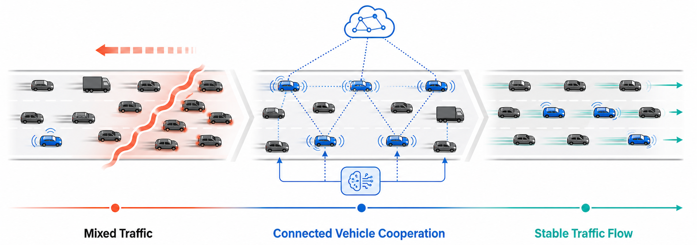
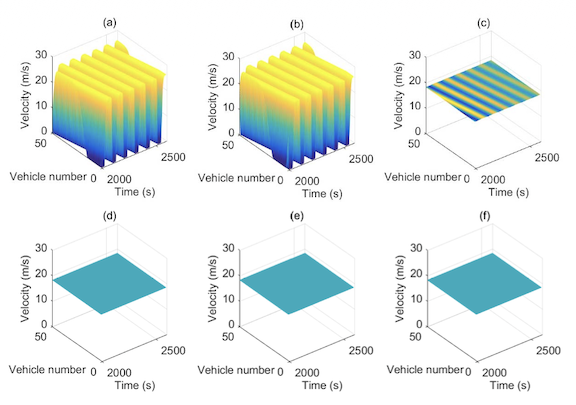
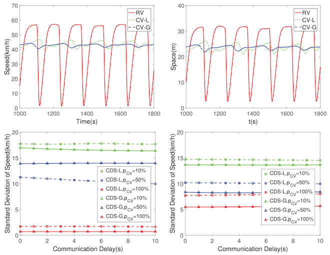
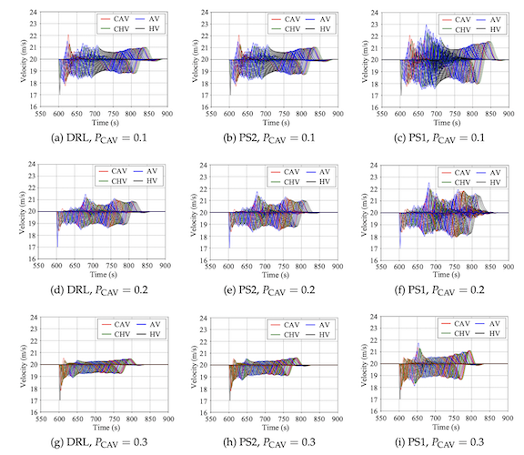

Resolving Traffic Congestion with Connected Vehicles
Overview
As connected and regular vehicles will coexist for the foreseeable future, understanding and controlling heterogeneous traffic flow is essential. The central question of this research is how connected vehicles can stabilize the entire traffic stream. Addressing this question requires understanding how disturbances propagate through interactions among different vehicle types, how connectivity and vehicle distribution affect this propagation, and how shared local or global information can be translated into effective driving actions.

Our work addresses this challenge through four complementary advances in mixed-traffic modeling, cooperative control, stability analysis, and learning-based platooning:
- We developed a unified car-following framework to reveal how the penetration rate and spatial distribution of connected vehicles affect mixed-traffic stability, together with a distributed feedback control strategy that enables connected vehicles to stabilize traffic and improve traffic efficiency[1].
- We proposed local and global cooperative driving strategies that use shared vehicle information to suppress traffic oscillations and improve traffic efficiency[2].
- We established a generalized string-stability framework and derived control conditions that prevent disturbances from amplifying along connected vehicle strings[3].
- We recently extended connected-vehicle cooperation to hybrid platooning by developing a deep reinforcement learning strategy that dynamically balances platoon structure, traffic throughput, and disturbance suppression in traffic composed of connected, autonomous, and human-driven vehicles[4].
Publications



